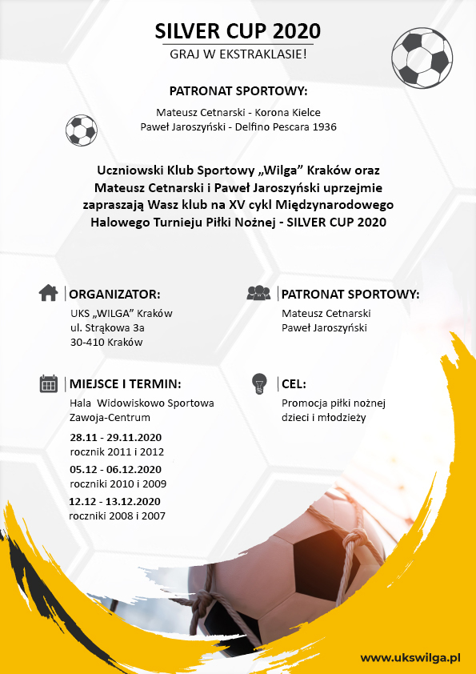
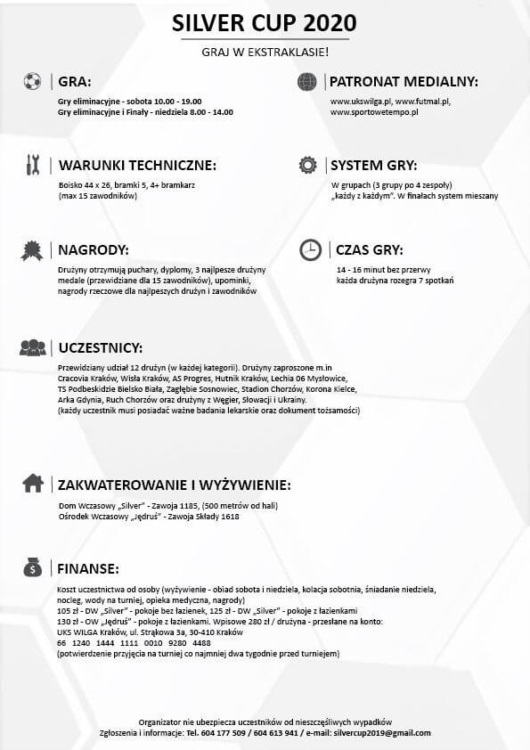

Zawodnicy nasze sekcji lekkiej atletyki wzięli udział w GRAND PRIX Krakowa w
biegach
przełajowych.
Łucja Sęp-Wydmańska po bardzo dobrym biegu zdobyła II miejsce w GRAND PRIX
Krakowa w
kategorii rocznika 2013.
Wielkie gratulacje dla Łucji oraz pozostałych naszych zawodników, którzy uzyskali
czołowe lokaty w swoich kategoriach. Trenerem grupy jest Pani Barbara Siemieńska.
Dziewczynki rocznik 2011 -
Magdalena Bejm, Emma
Staszek
Chłopcy rocznik 2011 - Szymon Bejm
Dziewczynki rocznik 2010 -
Aleksandra Borys,
Hanna Lubijewska
Chłopcy rocznik 2010 - Szymon
Caban, Maciej
Piotrowicz
Dziewczynki rocznik 2009 - Ewa
Konieczny, Alicja
Sroka, Nikola Rakoczy
Chłopcy rocznik 2009 - Roch Pogwizd
gorce cup 2021 dla uks wilga-trenuj z extra-klasą
Drużyna Orlików naszego klubu wygrała ogólnopolski halowy turniej piłki nożnej
"GORCE
CUP 2021", rozgrywany w hali widowiskowo-sportowej w Łącku.
Drużyna Wilgi - Trenuj z Extra-klasą w grupie eliminacyjnej wygrała z Halny
Kamienica
3-0, Dunajec Nowy Sącz 1-0, AP GOAL II Rabka Zdrój 3-0. W półfinale wygraliśmy z AP GOAL I Rabka Zdrój 3-0,
natomiast w finale po rzutach karnych (1-0) wygralismy z drużyną Heleny Nowy Sącz.
Królem strzelców turnieju został zawodnik naszej drużyny Jakub Burowski!
Ogromne brawa dla naszych młodych adeptów futbolu!!!
Świeta 2020 z UKS Wilga
Silver cup 2020


nowy rok szkolny 2020/2021
Zapraszamy na treningi naszych sekcji, mamy ich aż 5 .


 .
.